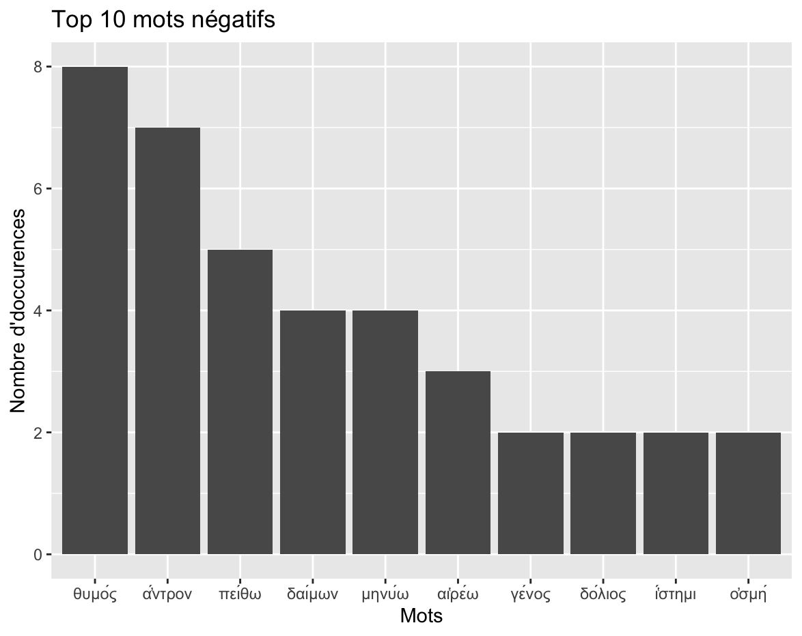

Projet Humanités Numériques HN4
Bienvenue sur mon projet pour les Humanités Numériques 4.
L'objectif de ce projet est de mettre en oeuvre les méthodes
acquises lors du Master Humanités Numériques et Classiques à
l'université Paris-Nanterre pour étudier un corpus littéraire.
Pour cette étude, j'ai chisoi d'utiliser comme corpus l'Hymne
Homérique à Hermès. Le dieu Hermès est ici la figure qui nous
intéresse.
Plan
Il s'agit de montrer la puissance de ce dieu en utilisant des outils numériques nous permettant d'analyser ce corpus. Le but de ce projet est de répondre à la question suivante: Comment le poète montre-t-il à travers l’Hymne Homérique à Hermès la légitimité, la détermination et la puissance du dieu Hermès ? L'étude littéraire de ce corpus a permis de réaliser le plan suivant:
I - Hermès, le dernier né des dieux légitime parmi les Olympiens
A) Narration et résumé du texte
B) Naissance divine dudieu Hermès grâce à l’immortalité de ces
deux parents
C) La demeure de Maia, un lieu sacré digne de l’Olympe
D) Les chants d’Hermès mettent en valeur la légitimité du dieu
qui a naturellement sa place parmi les Olympiens 3
II - Hermès, le dieu déterminé à obtenir ses timai et sa place parmi les Olympiens grâce à sa rivalité avec Apollon
A) Le dieu des voleurs: vol des boeufs et ruse d’Hermès
B) Le dieu de la confrontation verbale
C) Le dieu de l’échange et de la réconciliation avec
l'obtention des timai 5
III - Cette légitimité et cette détermination montrent la véritable puissance du dieu Hermès
A) Vivacité d’esprit et techné d’Hermès
B) La puissance d’Hermès est reconnue à la fois par Apollon et
sa mère Maia
C) L’acquisition finale des timai et dualité du dieu Hermès
Collecte des données
- Données récupérées à partir du site Perseus
- Texte en anglais et en français
-
Formats:
- xml en téléchargeant les fichiers
- txt en copiant/collant les textes dans l'éditeur Visual Studio Code - Stockage des textes avec GitHub


Analyse avec voyant tools
L’analyse du texte à l’aide de voyant tools met en valeur la puissance et surtout la légitimité de ce dieu en insistant sur l’origine divine de ce dieu et sur l’immortalité de ces deux parents: Zeus et Maia. En effet, le terme διὸς est présent 32 fois dans le corpus. Διὸς désigne à la fois Zeus et la divinité en général. Le graphique représentant la fréquence du terme διὸς tout au long des segments du texte montre que ce terme est présent tout au long du texte et particulièrement au début et à la fin. Cette analyse est cohérente car le début de l’hymne est caractérisé par la généalogie divine du dieu et la fin de l’hymne met en scène l’acquisition des timai d’Hermès. Hermès est le dernier né des dieux et doit obtenir sa place parmi les Olympiens.

Le terme μαιάδος ressort également et est présent 15 fois au long du texte. La forme du génitif singulier met encore en lumière l’origine divine de ce dieu. Tout au long du texte, l’auteur insiste sur l’immortalité de Maia qui est pourtant une nymphe mortelle. Le graphique représentant la fréquence du terme μαιάδος tout au long des segments du texte démontre que ce terme est principalement présent à la fin du texte. Peut-être s’agit-il de montrer qu’ Hermès obtient ses timai grâce à Zeus mais aussi grâce à sa mère Maia ?
Le terme υἱός montre également l’origine divine d’Hermès. Trois
formes de ce terme sont présents tout au long du texte: υἱός,
υἱὸς, υἱέ. La dernière forme apostrophe υἱέ désigne également
Hermès mais dans la bouche d’Apollon.
Hermès est également le dieu de la confrontation verbale comme
nous le montre le terme Μῦθον qui est présent 15 fois dans le
corpus. Cela montre l’importance du discours dans l’Hymne
Homérique à Hermès.
Apollon, le frère d’Hermès joue un rôle important dans l’hymne Homérique à Hermès. En effet, la forme ἀπόλλων est présente 17 fois dans ce corpus. La querelle avec Apollon est un événement important dans l’hymne car c’est grâce à cette querelle qu’Hermès obtient ses timai. Cette querelle souligne la détermination du dieu Hermès. Le vol des bœufs d’Apollon est au cœur de cette querelle. La forme βοῶν est présente 14 fois tandis que la forme βοῦς est présente 12 fois. Le graphique représentant la fréquence du terme ἀπόλλων tout au long des segments du texte montre que ce terme est présent à tout au long du texte sauf dans le début de l’hymne. Cela est cohérent car le personnage d’Apollon entre en scène après l’invention de la lyre par Hermès. L’analyse des bœufs met en valeur la vivacité d’esprit ainsi que la techné d’Hermès.
Le terme Θεῶν qui fait écho au terme διὸς est présent 15 fois dans le corpus. Les deux chants d’Hermès célèbrent les dieux et en particulier le deuxième chant d’Hermès qui est réellement théogonique. Hermès raconte la naissance de chaque dieu et la façon dont ils se sont vus attribuer leur sphère d'influence respective. Cela suggère que, puisque Hermès est le dernier né des Olympiens, sa théogonie doit se terminer par sa propre naissance et l'acquisition des honneurs divins. Le graphique représentant la fréquence du terme Θεῶν tout au long des segments du texte montre que ce terme est présent tout au long du texte mais en particulier à la fin où Hermès prend sa place parmi les bienheureux dieux.
I. Scripts R
I.1. Lemmatisation
En premier lieu, il a fallu lemmatiser le texte avec l'outil Deucalion. Cette méthode permet d'obtenir la base des mots afin de pouvoir faire des analyses précises.
I.2. Analyse algorithmique
La taille du corpus de l'Hymne Homérique à Hermès étant trop
faible pour réaliser une analyse quantitative, il a fallu réaliser
une analyse sur le contenu du corpus. Mon objectif a été
d'extraire les mots positifs et négatifs du corpus afin de montrer
la dualité du dieu Hermès qui est à la fois bienvaillant et
malveillant. Les outils utilisés pour cette analyse sont le
langage R avec l'éditeur RStudio.
J'ai commencé par rechercher des listes de mots positifs et
négatifs dans les langues grecques et français. La majorité de ces
listes étaient disponibles dans des projets GitHub public. Il a
ensuite fallu calculer les intersections entre ces listes de mots
et le corpus étudié pour obtenir les mots qui sont présents dans
les deux ensembles. J'ai ensuite utilisé deux boucles for
imbriquées pour compter le nombre de fois que les mots dans
l'intersection apparaissent dans le corpus de l'Hymne Homérique à
Hermès. Cela m'a permis d'obtenir le nombre de fois que chaque mot
positif et négatif apparaissent dans le texte. Enfin, j'ai trié
ces listes dans l'ordre décroissant pour obtenir les mots positifs
et négatifs les plus présents.
L'ensemble de mes travaux
algorithmiques liés au langage R sont enregistrés dans le
répertoire src/R de GitHub:
lien.
I.2.1. Top 10 mots positifs
Sur la graphique ci-dessous est représenté la liste des 10 mots positifs qui apparaissent le plus souvent dans l'Hymne Homérique à Hermès:
πολύς désigne tout ce qui a une grande valeur et également tout ce qui est vaste. Ce terme est utilisé à la fois pour caractériser Hermès mais également la demeure dans laquelle il habite avec sa mère Maïa. ἔργον fait référence aux oeuvres remarquables d'Hermès telles que l'invention du feu ou l'invention de la lyre. ἐθέλω montre l'immense volonté d'Hermès qui sait que sa place est parmi les Olympiens. καλός met en valeur la beauté d'Hermès et de sa demeure. δῶρον fait écho aux différents timai bénéfiques et bienveilants que reçoit Hermès. θαῦμα souligne l'admiration. τιμή désigne les honneurs remarquables qui sont conférés à Hermès. χαίρω insiste sur le bonheur d'Hermès lorsque celui-ci écoute la lyre pour la première fois. Χρυσός désigne la sublime demeure de la nymphe Maïa.
I.2.2. Top 10 mots négatifs
θυμός fait référence à la colère d'Apollon envers Hermès lorsque celui-ci vole ses boeufs. ἄντρον désigne la grotte de Maïa et possède plutôt une valeur négative. La dualité du dieu Hermès fait écho à la dualité de la demeure de Maïa qui est à la fois un temple magnifique et une grotte sombre. πείθω, δαίμων et αἱρέω symbolisent la capacité énorme de persuasion du dieu Hermès qui arrive toujours à convaincre son adversaire. δαίμων et δόλιος font écho à la ruse et la tromperie d'Hermès. μηνύω souligne la dénonciation d'Apollon.
Construction du site web
Pour présenter les résultats de ce projet, j'ai choisi de créer un
site web avec les langages HTML et CSS. Il y a une barre de
navigation qui permet de se rendre facilement dans les différentes
sections du site.
Le site ne s'adapte pas bien aux écrans de
petite taille, il faut donc utiliser un ordinateur pour le
regarder.
J'ai stocké le code du site dans GitHub afin
de pouvoir le mettre en lige en utilisant GitHub Pages.